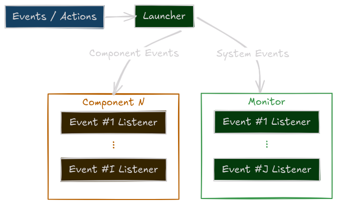
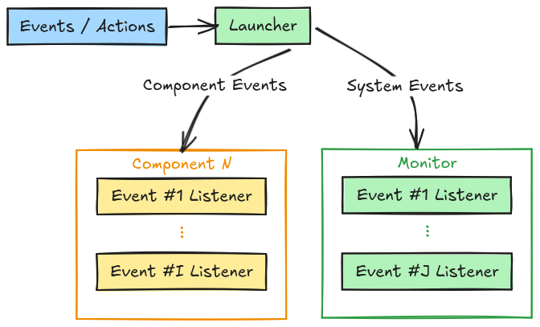
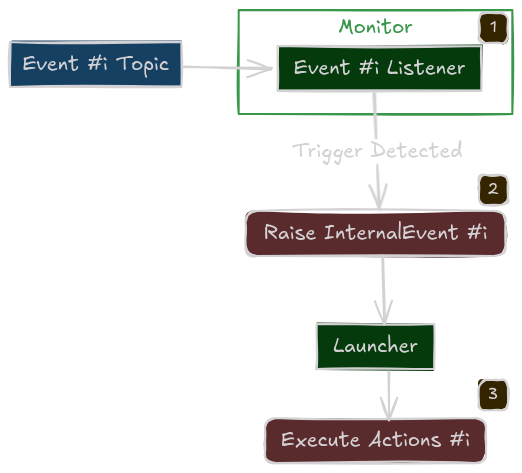
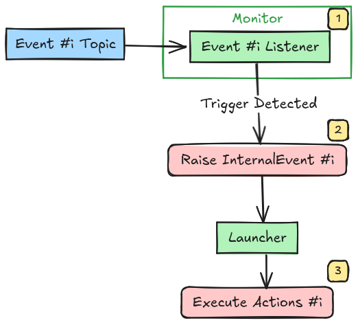

Recipes Launcher¶
Recipes: One script to rule them all.
The Launcher is your entry point to the Sugarcoat ecosystem. It provides a clean, Pythonic API to configure, spawn, and orchestrate your ROS2 nodes without writing XML or complex launch files.
Under the hood, every Launcher spawns an internal Monitor node. This hidden “Brain” is responsible for tracking component health, listening for events, and executing the orchestration logic.
Execution Architectures¶
The Launcher supports two execution modes, configured via the multi_processing flag.
Default for Debugging (multi_processing=False)
All components run in the same process as the Launcher and Monitor.
Pros: Fast startup, shared memory, easy debugging (breakpoints work everywhere).
Cons: The Global Interpreter Lock (GIL) can bottleneck performance if you have many heavy nodes.


Multi-threaded Execution¶
Production Mode (multi_processing=True)
Each component runs in its own isolated process. The Monitor the still runs in the same process as the Launcher.
Pros: True parallelism, crash isolation (one node crashing doesn’t kill the system).
Cons: Higher startup overhead.


Multi-process Execution¶
Launcher Features¶
1. Package & Component Loading¶
You can add components from your current script or external packages.
# Add from an external entry point (for multi-process separation)
launcher.add_pkg(
package_name="my_robot_pkg",
components=[vision_component] # Pass config/events here
multiprocessing=True
)
2. Lifecycle Management¶
Sugarcoat components are Lifecycle nodes. The Launcher handles the transition state machine for you.
activate_all_components_on_start=True: Automatically transitions all nodes to Active after spawning.
3. Global Fallbacks¶
Define “Catch-All” policies for the entire system.
# If ANY component reports a crash, restart it.
launcher.on_component_fail(action_name="restart")
4. Events Orchestration¶
Pass your events/actions dictionary once to the Launcher and it will handle delegating the event monitoring to the concerned component.
Complete Usage Example¶
from ros_sugar.core import BaseComponent, Event, Action
from ros_sugar.actions import log, restart
from ros_sugar.io import Topic
from ros_sugar import Launcher
# 1. Define Components
# (Usually imported from your package)
driver = BaseComponent(component_name='lidar_driver')
planner = BaseComponent(component_name='path_planner')
# Set Fallback Policy
# If the driver crashes, try to restart it automatically
driver.on_component_fail(fallback=restart(component=driver))
# 2. Define Logic for Events
battery = Topic(name="/battery", msg_type="Float32")
low_batt_evt = Event(battery.msg.data < 15.0)
log_action = log(msg="WARNING: Battery Low!")
# 3. Initialize Launcher
launcher = Launcher(
config_file='config/robot_params.toml', # Can optionally pass a configuration file
activate_all_components_on_start=True,
multi_processing=True # Use separate processes
)
# 4. Register Components
# You can attach specific events to specific groups of components
launcher.add_pkg(
components=[driver, planner],
ros_log_level="error"
events_actions={low_batt_evt: log_action}
)
# 7. Launch!
# This blocks until Ctrl+C is pressed
launcher.bringup()
The Monitor (Internal Engine)¶
Note
The Monitor is configured automatically. You do not need to instantiate or manage it manually.
The Monitor is a specialized, non-lifecycle ROS2 node that acts as the central management node.
Responsibilities:
Custom Actions Execution: Handles executing custom Actions defined in the recipe.
Health Tracking: Subscribes to the
/statustopic of every component.Orchestration: Holds clients for every component’s Lifecycle and Parameter services, allowing it to restart, reconfigure, or stop nodes on demand.
Architecture:
How the Launcher configures the Monitor with Events and Actions at startup.
{kind=link}

{kind=link}

Monitoring events¶
How the Monitor processes triggers and executes actions at runtime.
{kind=link}

{kind=link}

An Event Trigger¶